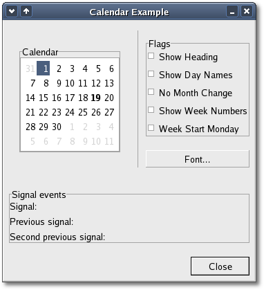

There might be times where you need to change a lot of information
within this widget and the following methods allow you to make multiple
changes to a Calendar widget without the user seeing multiple on-screen
updates.
They work just like the
freeze/thaw methods of every other widget. The
Calendar widget has a few options that allow you to change the way
the widget both looks and operates by using the method:
void
display_options(Gtk::CalendarDisplayOptionsField flags);
The 'flags' argument can be formed by combining either of the following
five options using the logical bitwise OR (|) operation:
| CALENDAR_SHOW_HEADING |
this
option specifies that the month and year
should be shown when drawing the calendar. |
| CALENDAR_SHOW_DAY_NAMES |
this
option specifies that the three letter
descriptions should be displayed for each day (e.g. Mon,Tue, etc.). |
| CALENDAR_NO_MONTH_CHANGE |
this
option states that the user should not and
can not change the currently displayed month. This can be good if you
only need to display a particular month such as if you are displaying
12
calendar widgets for every month in a particular year. |
| CALENDAR_SHOW_WEEK_NUMBERS |
this
option specifies that the number for each
week should be displayed down the left side of the calendar. (e.g. Jan
1
= Week 1,Dec 31 = Week 52). |
| CALENDAR_WEEK_START_MONDAY |
this
option states that the calendar week will
start on Monday instead of Sunday which is the default. This only
affects the order in which days are displayed from left to right. |
The following methods are used to set the currently displayed date:
bool
select_month(int month, int year);
void select_day(int
day);
The return value from select_month() is a bool value
indicating whether the selection was successful. With select_day() the
specified day number is selected
within the current month, if that is possible. A day value of 0 will
deselect any current selection.
In addition to having a day selected, any number of days in the month
may be 'marked'. A marked day is highlighted within the calendar
display. The following methods are provided to manipulate marked days:
bool
mark_day(int day);
bool unmark_day(int day);
void clear_marks();
The currently marked days are stored in an array within the wrapped
GtkCalendar structure and can be accessed using the marked_date()
accessor:
std::vector<bool> marked_date()
const;
The returned vector is 31 elements long so to test whether a particular
day is currently marked, you need to access the corresponding element
of
the vector (don't forget that vector elements are numbered 0 to n-1).
For example:
Gtk::Calendar *calendar
= new Gtk::Calendar;
...
// Is day 7 marked?
if (calendar->marked_date()[7-1])
{
// day is marked
}
Note that marks are persistent across month and year changes. The final
Calendar widget method is used to retrieve the currently
selected date, month and/or year.
void
get_date(int *year, int
*month, int *day) const;
This method requires you to pass the addresses of int
variables, into which the result will be placed. Passing null to an
argument results in the corresponding value not being returned.
The Calendar widget can generate a number of signals indicating date
selection and change. You can connect a slot to any of these signals by
using the corresponding proxy signal function:
- signal_month_changed()
- signal_day_selected()
- signal_day_selected_double_click()
- signal_prev_month()
- signal_next_month()
- signal_prev_year()
- signal_next_year()
Calendar
Example
This example displays a window containing a Calendar widget. There are
several check buttons that can be checked and unchecked to toggle the
five display options on and off. The font used to draw the calendar can
also be changed.
The header file for the XFC Calendar Example is <calendar.hh>:
#include <xfc/main.hh>
#include <xfc/gtk/calendar.hh>
#include <xfc/gtk/checkbutton.hh>
#include <xfc/gtk/fontselection.hh>
#include <xfc/gtk/label.hh>
#include <xfc/gtk/window.hh>
using namespace Xfc;
class CalendarWindow : public Gtk::Window
{
static const int
DEF_PAD = 10;
static const int
DEF_PAD_SMALL = 5;
static const int
TM_YEAR_BASE = 1900;
Pointer<Gtk::Calendar> calendar;
Pointer<Gtk::Label> last_signal;
Pointer<Gtk::Label> previous_signal;
Pointer<Gtk::Label> previous2_signal;
std::vector<Gtk::CheckButton*> checkboxes;
std::vector<bool>
settings;
void set_flags();
String date_to_string();
void
set_signal_strings(const char *str);
protected:
void
on_toggle_flag(Gtk::CheckButton *toggle);
void on_select_font();
void
on_font_selection_ok(Gtk::FontSelectionDialog *font_dialog);
void
on_day_selected_double_click();
public:
CalendarWindow();
virtual
~CalendarWindow();
};
and the source file is <calendar.cc>:
#include "calendar.hh"
#include <xfc/gtk/box.hh>
#include <xfc/gtk/buttonbox.hh>
#include <xfc/gtk/frame.hh>
#include <xfc/gtk/separator.hh>
#include <xfc/pango/font.hh>
const int
CalendarWindow::DEF_PAD;
const int
CalendarWindow::DEF_PAD_SMALL;
const int
CalendarWindow::TM_YEAR_BASE;
CalendarWindow::CalendarWindow()
{
using namespace
sigc;
for (int i = 0; i < 5; i++)
settings.push_back(false);
set_title("XFC Calendar Example");
set_border_width(5);
set_resizable(false);
Gtk::VBox *vbox = new
Gtk::VBox(false, DEF_PAD);
add(*vbox);
// The top part of
the
window, Calendar, flags and fontsel.
Gtk::HBox *hbox = new
Gtk::HBox(false, DEF_PAD);
vbox->pack_start(*hbox, true, true, DEF_PAD);
Gtk::HButtonBox *hbbox = new
Gtk::HButtonBox;
hbox->pack_start(*hbbox, false, false, DEF_PAD);
hbbox->set_layout(Gtk::BUTTONBOX_SPREAD);
hbbox->set_spacing(5);
// Calendar widget
Gtk::Frame *frame = new Gtk::Frame("Calendar");
hbbox->pack_start(*frame, false, true, DEF_PAD);
calendar = new
Gtk::Calendar;
set_flags();
calendar->mark_day(19);
frame->add(*calendar);
calendar->signal_month_changed().connect(bind(mem_fun(this,
&CalendarWindow::set_signal_strings),
"month_changed: "));
calendar->signal_day_selected().connect(bind(mem_fun(this,
&CalendarWindow::set_signal_strings),
"day_selected: "));
calendar->signal_day_selected_double_click().connect(mem_fun(this,
&CalendarWindow::on_day_selected_double_click));
calendar->signal_prev_month().connect(bind(mem_fun(this,
&CalendarWindow::set_signal_strings),
"prev_month: "));
calendar->signal_next_month().connect(bind(mem_fun(this,
&CalendarWindow::set_signal_strings),
"next_month: "));
calendar->signal_prev_year().connect(bind(mem_fun(this,
&CalendarWindow::set_signal_strings),
"prev_year: "));
calendar->signal_next_year().connect(bind(mem_fun(this,
&CalendarWindow::set_signal_strings),
"next_year: "));
Gtk::VSeparator *separator = new
Gtk::VSeparator;
hbox->pack_start(*separator, false, true);
Gtk::VBox *vbox2 = new
Gtk::VBox(false, DEF_PAD);
hbox->pack_start(*vbox2, DEF_PAD);
// Build the Right
frame
with the flags in
frame = new Gtk::Frame("Flags");
vbox2->pack_start(*frame, true, true, DEF_PAD);
Gtk::VBox *vbox3 = new
Gtk::VBox(true, DEF_PAD_SMALL);
frame->add(*vbox3);
struct { char *label;
}
flags[] = {
{ "Show Heading" },
{ "Show Day Names" },
{ "No Month Change" },
{ "Show Week Numbers" },
{ "Week Start Monday" }
};
for (int i = 0; i < 5; i++)
{
Gtk::CheckButton *toggle = new
Gtk::CheckButton(flags[i].label);
toggle->signal_toggled().connect(bind(mem_fun(this,
&CalendarWindow::on_toggle_flag), toggle));
vbox3->pack_start(*toggle);
checkboxes.push_back(toggle);
}
// Build the right
font-button
Gtk::Button *button = new Gtk::Button("Font...");
button->signal_clicked().connect(mem_fun(this,
&CalendarWindow::on_select_font));
vbox2->pack_start(*button, false, false);
// Build the Signal-event part.
frame = new Gtk::Frame("Signal
events");
vbox->pack_start(*frame, true,true, DEF_PAD);
vbox2 = new Gtk::VBox(true, DEF_PAD_SMALL);
frame->add(*vbox2);
hbox = new Gtk::HBox(false, 3);
vbox2->pack_start(*hbox, false);
Gtk::Label *label = new
Gtk::Label("Signal:");
hbox->pack_start(*label, false);
last_signal = new
Gtk::Label("");
hbox->pack_start(*last_signal, false);
hbox = new Gtk::HBox(false, 3);
vbox2->pack_start(*hbox, false);
label = new
Gtk::Label("Previous signal:");
hbox->pack_start(*label, false);
previous_signal = new
Gtk::Label("");
hbox->pack_start(*previous_signal, false);
hbox = new Gtk::HBox(false, 3);
vbox2->pack_start(*hbox, false);
label = new Gtk::Label("Second
previous signal:");
hbox->pack_start(*label, false);
previous2_signal = new
Gtk::Label("");
hbox->pack_start(*previous2_signal, false);
hbbox = new
Gtk::HButtonBox;
vbox->pack_start(*hbbox, false,false);
hbbox->set_layout(Gtk::BUTTONBOX_END);
button = new
Gtk::Button("Close");
button->signal_clicked().connect(mem_fun(this,
&CalendarWindow::dispose));
hbbox->add(*button);
button->set_flags(Gtk::CAN_DEFAULT);
button->grab_default();
show_all();
}
CalendarWindow::~CalendarWindow()
{
}
void
CalendarWindow::set_flags()
{
int options = 0;
for (int i = 0; i < 5; i++)
{
if
(settings[i])
options =
options + (1 << i);
}
if (calendar)
calendar->display_options(options);
}
void
CalendarWindow::on_toggle_flag(Gtk::CheckButton *toggle)
{
int j = 0;
for (int i = 0; i < 5; i++)
{
if
(checkboxes[i] == toggle)
j = i;
}
settings[j] = !settings[j];
set_flags();
}
void
CalendarWindow::on_select_font()
{
static
Gtk::FontSelectionDialog *font_dialog = 0;
if (!font_dialog)
{
font_dialog = new
Gtk::FontSelectionDialog("Font Selection
Dialog");
font_dialog->set_position(Gtk::WIN_POS_MOUSE);
signal_destroy().connect(sigc::mem_fun(font_dialog,
&Gtk::FontSelectionDialog::dispose));
font_dialog->ok_button()->signal_clicked().connect(sigc::bind(sigc::mem_fun(this,
&CalendarWindow::on_font_selection_ok), font_dialog));
font_dialog->cancel_button()->signal_clicked().connect(sigc::mem_fun(*font_dialog,
&Gtk::FontSelectionDialog::hide));
}
if
(!font_dialog->is_visible())
font_dialog->show();
else
font_dialog->hide();
}
void
CalendarWindow::on_font_selection_ok(Gtk::FontSelectionDialog
*font_dialog)
{
String font_name = font_dialog->get_font_name();
if (calendar)
{
Pango::FontDescription
font_desc(font_name);
calendar->modify_font(font_desc);
}
}
void
CalendarWindow::on_day_selected_double_click()
{
set_signal_strings("day_selected_double_click: ");
struct tm tm;
memset(&tm, 0, sizeof
(tm));
calendar->get_date(&tm.tm_year,
&tm.tm_mon, &tm.tm_mday);
tm.tm_year -= TM_YEAR_BASE;
if
(calendar->marked_date()[tm.tm_mday - 1] == 0)
calendar->mark_day(tm.tm_mday);
else
calendar->unmark_day(tm.tm_mday);
}
String
CalendarWindow::date_to_string()
{
struct tm tm;
memset(&tm, 0, sizeof
(tm));
calendar->get_date(&tm.tm_year,
&tm.tm_mon, &tm.tm_mday);
tm.tm_year -= TM_YEAR_BASE;
time_t time = mktime(&tm);
char buffer[256];
strftime(buffer, 255, "%x", gmtime(&time));
return buffer;
}
void
CalendarWindow::set_signal_strings(const char
*str)
{
String text = previous_signal->get_text();
previous2_signal->set_text(text);
text = last_signal->get_text();
previous_signal->set_text(text);
text = str;
text.append(date_to_string());
last_signal->set_text(text);
}
int main (int
argc, char *argv[])
{
using namespace Main;
init(&argc, &argv);
CalendarWindow window;
window.signal_destroy().connect(sigc::ptr_fun(&Xfc::Main::quit));
run();
return 0;
}
Compiling Calendar
If you compiled and installed XFC yourself, you will find the source
code for Calendar in the
<examples/howto/calendar> source directory along with a Makefile. If
XFC came pre-installed, or you installed it from an RPM package, you
will
find the source code in the
</usr/share/doc/xfcui-X.X/examples/howto/calendar> subdirectory. In
this case you will have to create the Makefile yourself (replace X.X
with the
version number of the libXFCui library you have installed).
To create a Makefile for Calendar, add the following lines to a new
text
file
and save it using the name "Makefile":
CC = g++
CFLAGS = -Wall -O2
calendar: calendar.cc calendar.hh
$(CC) calendar.cc -o calendar $(CFLAGS) `pkg-config
xfcui-X.X --cflags --libs`
clean:
rm -f calendar
If you cut and paste these lines make sure the whitespace before $(CC)
and rm is a tab character. When
you
compile and run this program you will see the following window appear:
